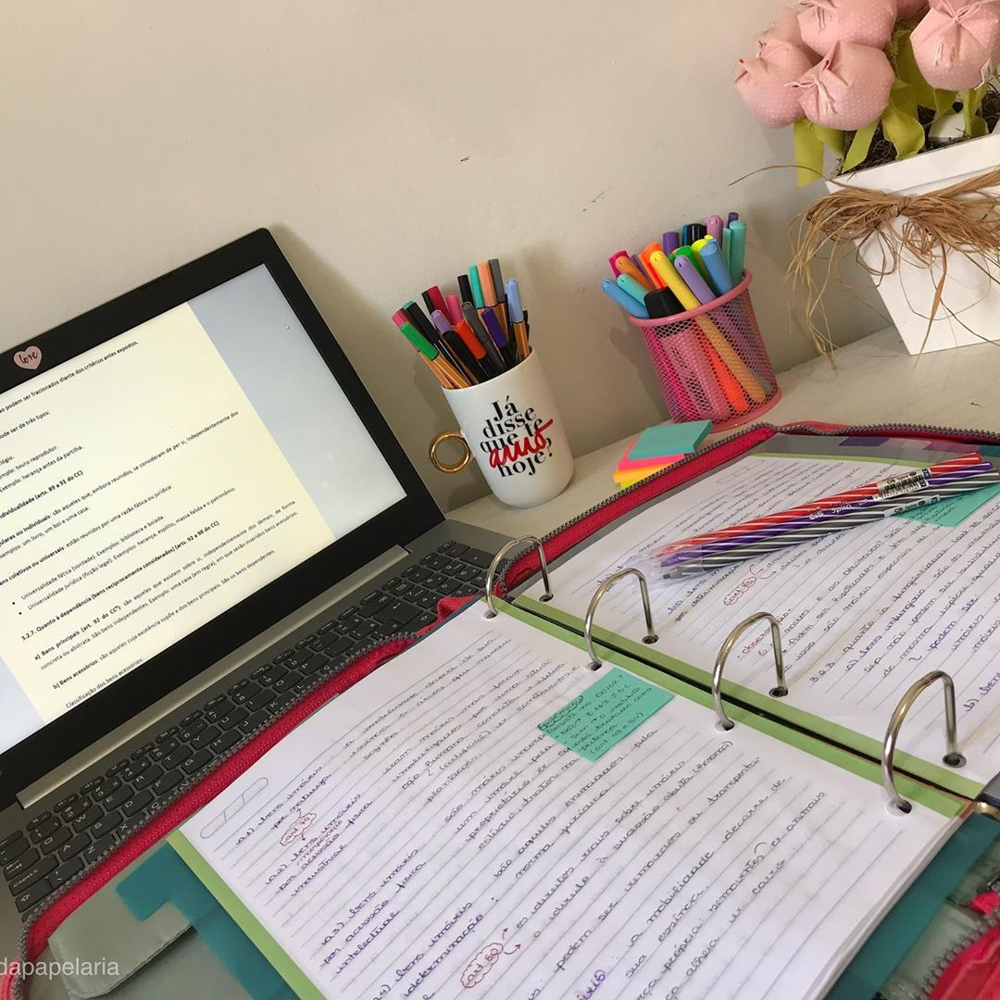

Dicas para o Estudante
Quarentena Produtiva
A vida não para...

Não procrastinar
A procrastinação é uma armadilha fatal
Não permita que a procrastinação faça com que você fique em uma bolha de conforto
Seja seu próprio incentivo
- Durma bem
- Se alimente bem
- Não invente desculpa
- Não se compara aos outros, cada um tem seu tempo
- Faça uma rotina e teste diferentes horarios para que assim você conhece em qual horario você é mais produtivo
- Não se preocupe com o tempo em que você estuda
- Faça metas
Hora de Estudar:
- Pegue todos os materiais que vai precisar
- Pegue água
- Os resumos não precisam ficar perfeitos, foque na ultilidades
- Use a internet para se aprofundar dos assuntos
- Resolva questões e leia arquilos relacionados ao assunto
- Procure estudar diariamete mas não encare os estudos como uma obrigação
- Coloque músicas classicas para relaxar
Clique aqui para mais informações
home